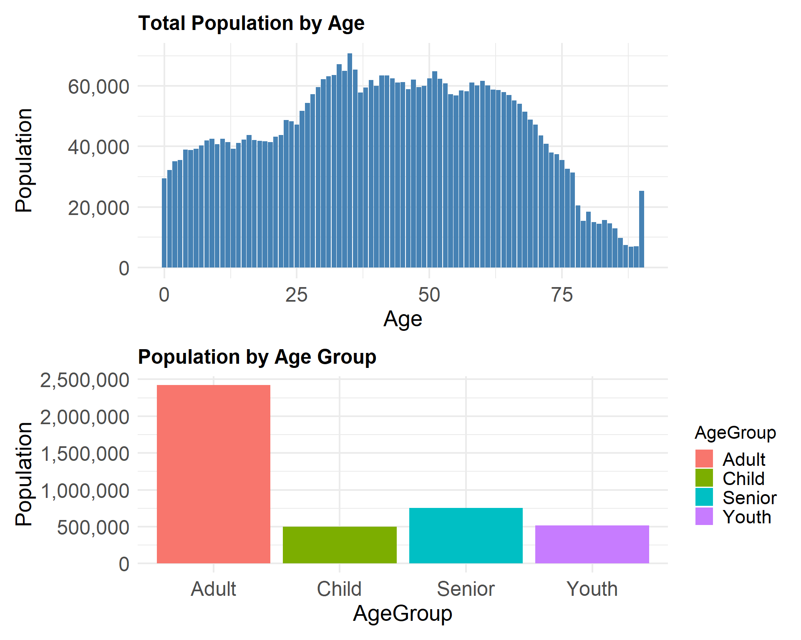
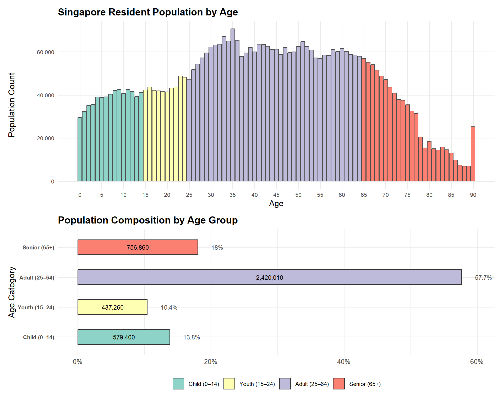

Code
pacman::p_load(tidyverse, ggrepel, ggthemes, patchwork, ggridges, scales)The original Netlify page was designed and produced by LIU CHIH-YUAN for his Take-Home Assignment 1 and can be found in the link by clicking on his name. Below is an extract of the original page inclusive the codes and plots.
I will be providing a critic on three good design principles and three areas for further improvement on his work. I will also prepare the makeover version of the data visualisation in Section 4 below.
The 2024 dataset from Singapore’ Department of Statistics provides resident population data by planning area, subzone, age, and sex.
To perform structured exploratory data analysis to uncover insights on demographic distribution across regions.
pacman::p_load(tidyverse, ggrepel, ggthemes, patchwork, ggridges, scales)The R packages used in this EDA are as follows:
tidyverse core R package for data science (contains essential packages such as ggplot2)ggrepel for ggplot2 to repel overlapping text labelsggthemes extra ggplot themespatchwork combine ggplotggridges for ridgeline plotsscales customer number formattingdf <- read.csv("Dataset/respopagesex2024.csv")common_theme <- theme_minimal(base_size = 16) +
theme(
axis.text = element_text(size = 18),
axis.title = element_text(size = 20),
plot.title = element_text(size = 18, face = "bold"),
legend.text = element_text(size = 17),
legend.title = element_text(size = 16)
)glimpse(df)Rows: 60,424
Columns: 6
$ PA <chr> "Ang Mo Kio", "Ang Mo Kio", "Ang Mo Kio", "Ang Mo Kio", "Ang Mo K…
$ SZ <chr> "Ang Mo Kio Town Centre", "Ang Mo Kio Town Centre", "Ang Mo Kio T…
$ Age <chr> "0", "0", "1", "1", "2", "2", "3", "3", "4", "4", "5", "5", "6", …
$ Sex <chr> "Males", "Females", "Males", "Females", "Males", "Females", "Male…
$ Pop <int> 10, 10, 10, 10, 10, 10, 10, 10, 30, 10, 20, 10, 20, 30, 30, 10, 3…
$ Time <int> 2024, 2024, 2024, 2024, 2024, 2024, 2024, 2024, 2024, 2024, 2024,…colSums(is.na(df)) PA SZ Age Sex Pop Time
0 0 0 0 0 0 str(df)'data.frame': 60424 obs. of 6 variables:
$ PA : chr "Ang Mo Kio" "Ang Mo Kio" "Ang Mo Kio" "Ang Mo Kio" ...
$ SZ : chr "Ang Mo Kio Town Centre" "Ang Mo Kio Town Centre" "Ang Mo Kio Town Centre" "Ang Mo Kio Town Centre" ...
$ Age : chr "0" "0" "1" "1" ...
$ Sex : chr "Males" "Females" "Males" "Females" ...
$ Pop : int 10 10 10 10 10 10 10 10 30 10 ...
$ Time: int 2024 2024 2024 2024 2024 2024 2024 2024 2024 2024 ...We see column Age is “chr” (character) instead of numeric, let’s check why by finding the unique value of column Age
sort(unique(df$Age)) [1] "0" "1" "10" "11" "12"
[6] "13" "14" "15" "16" "17"
[11] "18" "19" "2" "20" "21"
[16] "22" "23" "24" "25" "26"
[21] "27" "28" "29" "3" "30"
[26] "31" "32" "33" "34" "35"
[31] "36" "37" "38" "39" "4"
[36] "40" "41" "42" "43" "44"
[41] "45" "46" "47" "48" "49"
[46] "5" "50" "51" "52" "53"
[51] "54" "55" "56" "57" "58"
[56] "59" "6" "60" "61" "62"
[61] "63" "64" "65" "66" "67"
[66] "68" "69" "7" "70" "71"
[71] "72" "73" "74" "75" "76"
[76] "77" "78" "79" "8" "80"
[81] "81" "82" "83" "84" "85"
[86] "86" "87" "88" "89" "9"
[91] "90_and_Over"Here most likely it’s the 90_and_over causing it to be a str not int
df <- df %>%
mutate(
AgeNum = suppressWarnings(
ifelse(Age == "90_and_Over", 90, as.numeric(Age))
)
)Since we observed people over 90 years old are categorized 90_and_above instead of actual numbers, for the ease of plotting we hereby create a new column AgeNum
df <- df %>%
mutate(
AgeGroup = case_when(
AgeNum <= 12 ~ "Child",
AgeNum <= 24 ~ "Youth",
AgeNum <= 64 ~ "Adult",
TRUE ~ "Senior"
)
)We create a new column AgeGroup for future EDA purposes
str(df)'data.frame': 60424 obs. of 8 variables:
$ PA : chr "Ang Mo Kio" "Ang Mo Kio" "Ang Mo Kio" "Ang Mo Kio" ...
$ SZ : chr "Ang Mo Kio Town Centre" "Ang Mo Kio Town Centre" "Ang Mo Kio Town Centre" "Ang Mo Kio Town Centre" ...
$ Age : chr "0" "0" "1" "1" ...
$ Sex : chr "Males" "Females" "Males" "Females" ...
$ Pop : int 10 10 10 10 10 10 10 10 30 10 ...
$ Time : int 2024 2024 2024 2024 2024 2024 2024 2024 2024 2024 ...
$ AgeNum : num 0 0 1 1 2 2 3 3 4 4 ...
$ AgeGroup: chr "Child" "Child" "Child" "Child" ...p1 <- ggplot(df, aes(x = AgeNum, y = Pop)) +
stat_summary(fun = sum, geom = "bar", fill = "steelblue") +
labs(title = "Total Population by Age", x = "Age", y = "Population") +
scale_y_continuous(labels = label_comma()) +
common_theme
p2 <- df %>%
group_by(AgeGroup) %>%
summarise(Pop = sum(Pop)) %>%
ggplot(aes(x = AgeGroup, y = Pop, fill = AgeGroup)) +
geom_bar(stat = "identity") +
labs(title = "Population by Age Group", y = "Population") +
scale_y_continuous(labels = label_comma()) +
common_theme
(p1 / p2) + plot_layout(heights = c(1.2, 1))
Insights:
 3 Good Design Principles
3 Good Design Principles
Good Data-Appropriate Chart Type (Total Population by Age & Population by Age Group)
A Bar Chart was used to show the visualization of the population count for each discrete age. This is apprpriate for numerical variable like age or age bands. Readers can easily assess relative sizes, which support the effective visual comparison (i.e. comparing which age has a higher count).
The second plot on “Population by Age Group” has banded the ages into 4 Age Groups, namely: Adult, Child, Senior and Youth. This helps to condense the chart into age categories for quick selection if one intends to zoom in to a particularly age group for analysis.
Assessment: I would give this a rather high score on the clarity scale.
Clear Labelling and Minimal Chart Junk
The Axis Labels were simple and understanbleable. For both plots, the Y-axis population intervals with the use of horizontal grid lines allow for clear relative reference and comparisons. Furthermore the grid line are in lighter tone of grey which does not distract the viewer.
With no excessive gridlines, background noise, or distracting embellishments, Chih Yuan was able to apply the principle of minimizing “non-data ink” to maintain visual clarity.
Assessment: I would give this a good score on the clarity scale.
Functional Simplicity
The plot avoids excessive color schemes, 3D effects, or elaborate design, ensuring that the focus remains solely on the dataset itself. The use of colours also made the visual easier to identify age groupings which confusion, especially avoiding “colour blind” schemes.
It can be observed that Chih Yuan has likely prioritized clarity over unnecessary decoration is a strong point.
 3 Areas for Improvement
3 Areas for Improvement
More Data-meaningful Colour Encoding for Plot A
Originally only one colour was used in Plot A, whch is “steelblue”. And all ages were treated uniformly with no extra information encoded visually. However, in Plot B, the ages were broken down in to Age Groups and had respectively colours.
Improvements: With each Age bar coloured by the Age Group (i.e. Chlid, Youth, Adult, Senior etc.) according to a meaningful colour palette, the read would be able to immediately perceive a generation structure (by colour) on Plot A. This is to adhere to the design principle where it leverages on the pre-attentive attributes to encode extra informationn for instant recognition.
How this is done: use a customized scale_fill_manual() based on Age Bands.
Better X-Axis Scale (Breaks) and Age Handling
The original plot was created with bar for AgeNum but the Age axis was cluttered with every single year shown with the defauly ggplot spacing. This might cause readers to have a cognitive overload trying to trace the exact age levels.
Improvements: There is a need to have explicit control over the X-axis breaks using breaks = seq(0, 110, by = 5), where the age labels are every 5 years intervals. this makes the chart easier to read and keeps the chart clean and orderly. The design principle was to reduce clutter and optimise scales for faster comprehension.
Clearer Population by Age Group Plot (with Dual Labels)
The original plot p2 uses AgeGroup categories correctly but plots only height (population count) as an absolute value. This does not give the reader a sense of relative comparison between Age Groups.
Improvements: In the Plot B, bar labels where included to show the population count inside the bar and the percentage value outside the bar. This gives the reader both the absolute and relative metrics for the visuals. The design principle is to make data-ink ratio higher and avoid having readers to calculate information manually.
✅ Treat "90_and_Over" as part of Age = 90 (not missing, not removed).
✅ Sum it into the population count for Age 90 — exactly like Liu Chih-Yuan’s original “Total Population by Age” plot.
✅ So in the final Plot A:
# --- Data Preparation ---
# Correct Age handling: treat "90_and_Over" as Age 90
df <- df %>%
mutate(
AgeNum = ifelse(Age == "90_and_Over", 90, as.numeric(Age))
)
# Summarise population by AgeNum for both Plots
df_age <- df %>%
group_by(AgeNum) %>%
summarise(Pop = sum(Pop), .groups = "drop") %>%
mutate(
AgeGroup = case_when(
AgeNum <= 14 ~ "Child (0–14)",
AgeNum >= 15 & AgeNum <= 24 ~ "Youth (15–24)",
AgeNum >= 25 & AgeNum <= 64 ~ "Adult (25–64)",
AgeNum >= 65 ~ "Senior (65+)"
),
AgeGroup = factor(AgeGroup, levels = c("Child (0–14)", "Youth (15–24)", "Adult (25–64)", "Senior (65+)"))
)
# Summarise by AgeGroup for Plot B
df_age_group <- df_age %>%
group_by(AgeGroup) %>%
summarise(Pop = sum(Pop), .groups = "drop") %>%
mutate(
Perc = Pop / sum(Pop) * 100 # Calculate percentage
)# Define color palette
agegroup_colors <- c(
"Child (0–14)" = "#8dd3c7",
"Youth (15–24)" = "#ffffb3",
"Adult (25–64)" = "#bebada",
"Senior (65+)" = "#fb8072"
)
# --- Plot A: Total Population by Age ---
plot_age <- ggplot(df_age, aes(x = AgeNum, y = Pop, fill = AgeGroup)) +
geom_col(color = "grey30", width = 0.9) +
scale_fill_manual(values = agegroup_colors) +
scale_x_continuous(breaks = seq(0, 90, by = 5)) +
scale_y_continuous(labels = scales::comma) +
labs(
title = "Singapore Resident Population by Age",
x = "Age", y = "Population Count",
fill = "Age Group"
) +
theme_minimal(base_size = 12) +
theme(
plot.title = element_text(face = "bold", size = 14),
axis.text = element_text(size = 8),
panel.grid.minor = element_blank(),
legend.position = "none"
)
# --- Plot B: Population Composition by Age Group ---
plot_agegroup <- ggplot(df_age_group, aes(x = AgeGroup, y = Perc, fill = AgeGroup)) +
geom_col(width = 0.5, color = "grey20") +
scale_fill_manual(values = agegroup_colors) +
scale_y_continuous(labels = function(x) paste0(x, "%")) +
coord_flip() +
# Label inside bar for Population Count
geom_text(aes(label = scales::comma(Pop)),
position = position_stack(vjust = 0.5),
color = "black", size = 3) +
# Label at end of bar for Percent
geom_text(aes(label = paste0(round(Perc, 1), "%"), y = Perc + 2),
hjust = 0, size = 3, color = "grey30") +
labs(
title = "Population Composition by Age Group",
x = "Age Category", y = NULL,
fill = "Age Group"
) +
theme_minimal(base_size = 12) +
theme(
plot.title = element_text(face = "bold", size = 14),
legend.position = "bottom",
legend.title = element_blank(),
legend.text = element_text(size = rel(0.7)),
axis.text.y = element_text(size = 8, face = "bold"),
axis.ticks.y = element_blank()
)
# --- Final Combined Plot ---
(plot_age) / (plot_agegroup) +
plot_layout(heights = c(2.0, 1.5))